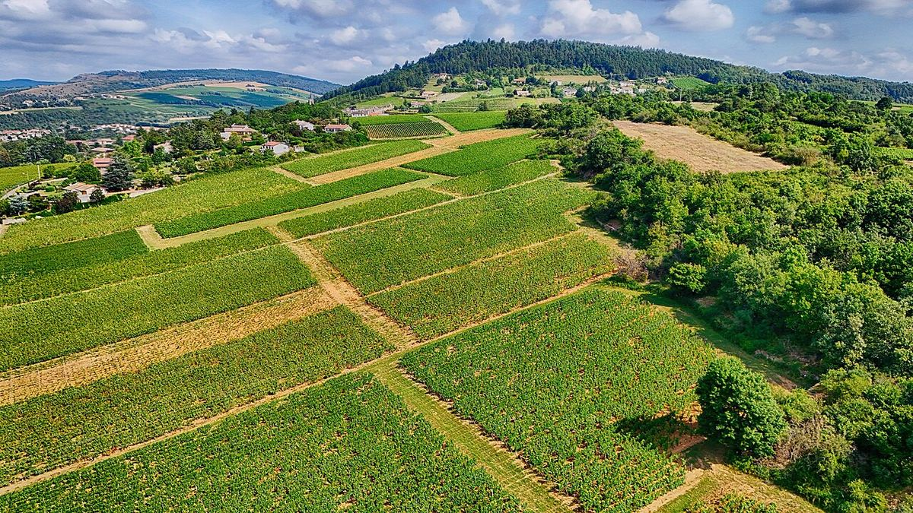

TINTO
Borgoña, en el centro-este de Francia, es la región de la Pinot Noir y la Chardonnay expresadas a través de parcelas de viñedo muy precisas, los climats. Su jerarquía de denominaciones culmina en los grands crus de la Côte d'Or y de Chablis.

La vid ya se cultivaba en Borgoña en época galorromana, pero fueron los monasterios medievales los que dieron forma a su viticultura. La abadía benedictina de Cluny, fundada en 910, y la cisterciense de Cîteaux, fundada en 1098, acumularon viñedos y observaron durante siglos qué parcelas daban los mejores vinos; los cistercienses crearon, por ejemplo, el Clos de Vougeot. Los duques de Borgoña de la casa de Valois promovieron la calidad de sus vinos, y en 1395 Felipe el Atrevido ordenó arrancar la Gamay en favor de la Pinot Noir. En 1443 se fundaron los Hospicios de Beaune, cuya subasta anual de vinos se celebra cada noviembre. Tras la Revolución francesa, las tierras de la Iglesia se vendieron como bienes nacionales, y las leyes de herencia fragmentaron después las propiedades, de modo que muchos viñedos se reparten hoy entre numerosos propietarios. Por eso conviven los domaines, que elaboran su propia uva, y los négociants, que compran uva, mosto o vino. En 2015 los climats del viñedo de Borgoña fueron inscritos en la lista del Patrimonio Mundial de la UNESCO.
La región se extiende de norte a sur desde el departamento del Yonne hasta el sur del Saona y Loira. Comprende Chablis y el Grand Auxerrois; la Côte d'Or, dividida en Côte de Nuits y Côte de Beaune; la Côte Chalonnaise, con Rully, Mercurey, Givry, Montagny y Bouzeron; y el Mâconnais, con denominaciones como Pouilly-Fuissé, Saint-Véran o Viré-Clessé. El Beaujolais, más al sur, se asocia a menudo a Borgoña, aunque tiene su propia identidad.
El clima es semicontinental, con inviernos fríos, veranos cálidos y riesgo de heladas primaverales y granizo, lo que hace que las cosechas varíen mucho de un año a otro. Los suelos derivan sobre todo de calizas y margas del Jurásico, cuya composición y profundidad cambian en distancias muy cortas a lo largo de las laderas.
El sistema borgoñón se basa en el lugar más que en la propiedad. En la base se sitúan las denominaciones regionales, como Bourgogne, Bourgogne Aligoté, Coteaux Bourguignons o Crémant de Bourgogne. Por encima están las denominaciones comunales o villages, como Meursault o Gevrey-Chambertin; dentro de ellas, los premiers crus, parcelas delimitadas cuyo nombre puede figurar en la etiqueta junto al del municipio; y, en la cima, los 33 grands crus, cada uno con su propia denominación, como Chambertin, Musigny, Romanée-Conti, Corton-Charlemagne o Montrachet. Algunos viñedos pertenecen a un único propietario y se conocen como monopoles.
La Pinot Noir es la variedad de los grandes tintos y la Chardonnay la de los grandes blancos. La Aligoté tiene su propia denominación regional y la de Bouzeron; la Gamay se utiliza en algunos vinos regionales, y en Saint-Bris, en el Yonne, se cultiva la Sauvignon Blanc. Borgoña elabora también espumosos de método tradicional con la denominación Crémant de Bourgogne.